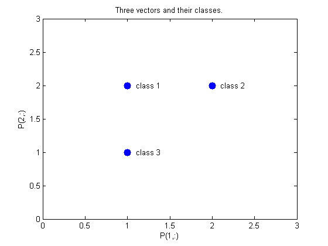

PNN Classification
This demonstration uses functions NEWPNN and SIM.
Here are three two-element input vectors P and their associated classes Tc. We would like to create a probabilistic neural network that classifes these vectors properly.
P = [1 2; 2 2; 1 1]'; Tc = [1 2 3]; plot(P(1,:),P(2,:),'.','markersize',30) for i=1:3, text(P(1,i)+0.1,P(2,i),sprintf('class %g',Tc(i))), end axis([0 3 0 3]) title('Three vectors and their classes.') xlabel('P(1,:)') ylabel('P(2,:)')
First we convert the target class indices Tc to vectors T. Then we design a probabilistic neural network with NEWPNN. We use a SPREAD value of 1 because that is a typical distance between the input vectors.
T = ind2vec(Tc); spread = 1; net = newpnn(P,T,spread);
Now we test the network on the design input vectors. We do this by simulating the network and converting its vector outputs to indices.
A = sim(net,P); Ac = vec2ind(A); plot(P(1,:),P(2,:),'.','markersize',30) axis([0 3 0 3]) for i=1:3,text(P(1,i)+0.1,P(2,i),sprintf('class %g',Ac(i))),end title('Testing the network.') xlabel('P(1,:)') ylabel('P(2,:)')
Let's classify a new vector with our network.
p = [2; 1.5]; a = sim(net,p); ac = vec2ind(a); hold on plot(p(1),p(2),'.','markersize',30,'color',[1 0 0]) text(p(1)+0.1,p(2),sprintf('class %g',ac)) hold off title('Classifying a new vector.') xlabel('P(1,:) and p(1)') ylabel('P(2,:) and p(2)')
This diagram shows how the probabilistic neural network divides the input space into the three classes.
p1 = 0:.05:3; p2 = p1; [P1,P2] = meshgrid(p1,p2); pp = [P1(:) P2(:)]'; aa = sim(net,pp); aa = full(aa); m = mesh(P1,P2,reshape(aa(1,:),length(p1),length(p2))); set(m,'facecolor',[0 0.5 1],'linestyle','none'); hold on m = mesh(P1,P2,reshape(aa(2,:),length(p1),length(p2))); set(m,'facecolor',[0 1.0 0.5],'linestyle','none'); m = mesh(P1,P2,reshape(aa(3,:),length(p1),length(p2))); set(m,'facecolor',[0.5 0 1],'linestyle','none'); plot3(P(1,:),P(2,:),[1 1 1]+0.1,'.','markersize',30) plot3(p(1),p(2),1.1,'.','markersize',30,'color',[1 0 0]) hold off view(2) title('The three classes.') xlabel('P(1,:) and p(1)') ylabel('P(2,:) and p(2)')